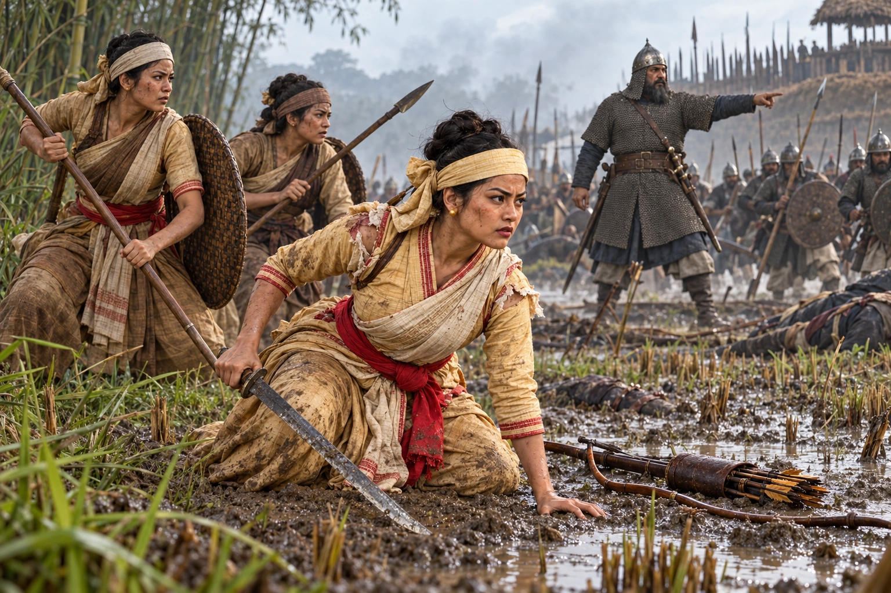

Mula Gabharu Falls Fighting Turbak
1532–1533 · Swarganarayan’s kingdom

After her husband Phrasengmung Borgohain is killed by Turbak's army, Princess Mula Gabharu leads women warriors into battle and is killed with five companions. Her death rallies the Ahom army.
Wikipedia names the Battle of Kachua; much of the story (the Kin Lao vow, her speech) is legend. Phrasengmung is not shown alive.
Sources
People: Mula Gabharu (Nang Mula), Phrasengmung Borgohain, Turbak, Suhungmung (Swarganarayan)
Open this scene in the interactive archive · Follow this event on MAP